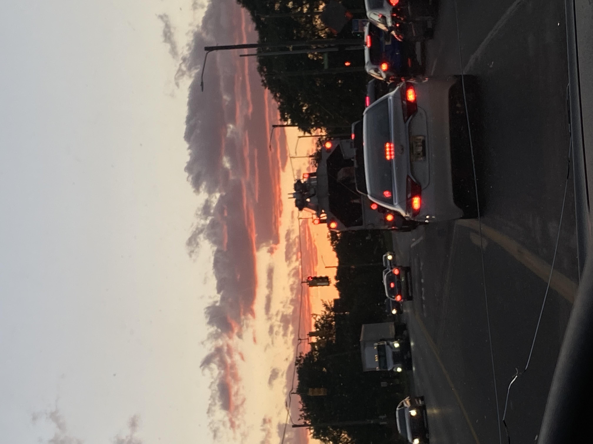
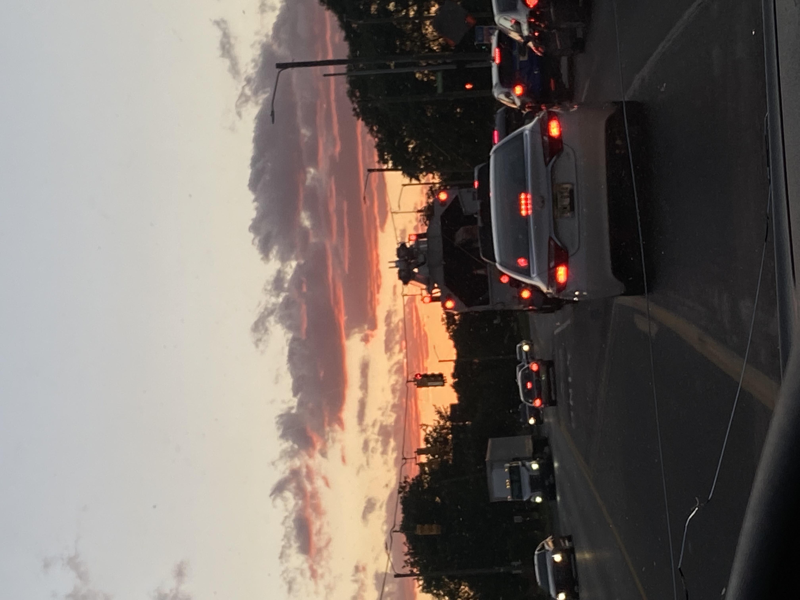

Im passionate about Photography and Art because it gives me a chance to create,and express myself in different ways.
I was introduced to it when I started to take pictures of people and take pictures of random things I find interesting.
I mainly inspired myself and the people I took pictures of. The people I see on social media that make a living from being a professional photographer.

 

 The moon
The moon